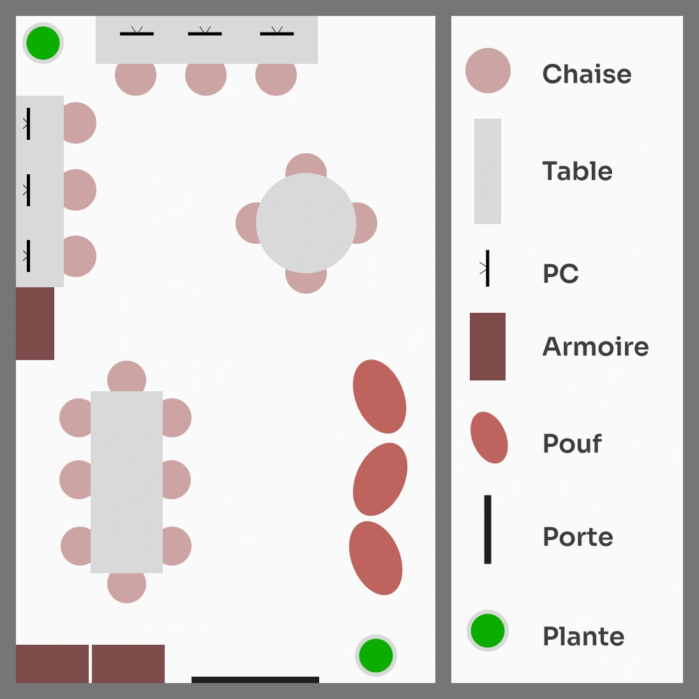
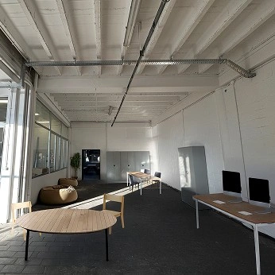

1. Contexte
Dans le cadre de l’UE Rethinking UX (RUX) 24–25, notre groupe a réalisé un projet visant à repenser l’aménagement d'une salle de l'école, en fonction des envies des étudiants. Avant toute modification, cette salle présentait un aménagement minimaliste, avec seulement quelques bancs et un grand espace vide, ce qui limitait son potentiel.
Le groupe a mené une enquête afin de comprendre les besoins réels des futurs utilisateurs, afin de concevoir des solutions adaptées qui favorisent un environnement plus ergonomique, collaboratif et stimulant. Grâce à une approche centrée sur l’utilisateur et une méthodologie itérative, nous avons exploré différentes pistes d’aménagement et mis en place des améliorations concrètes pour optimiser l’usage de cette salle.

2. Recherches et analyse
Une réflexion collective, au sein du groupe de cinq, a permis de définir plusieurs questions à poser aux étudiants concernant l’utilisation future du local. Pour avancer plus efficacement dans le travail, il s’est avéré nécessaire de répartir les tâches entre les différents membres. Par exemple, pendant que certains membres du groupe cherchaient de nouvelles questions, Adrien démarrait la conception du Google Form.
Une fois le questionnaire terminé, la décision a été prise de faire un premier tour dans l’école, de façon à recueillir les premiers témoignages d’étudiants. Le questionnaire a aussi été partagé en ligne via nos réseaux sociaux, afin de toucher le plus grand nombre de personnes possible.
Le groupe a aussi réfléchi aux choses importantes à regarder dans le local, pour préparer la future “visite”, telles que le nombre de prises disponibles et la luminosité.
Une fois la visite effectuée (uniquement à partir du local A083, car le local était fermé), la réflexion a porté sur les améliorations à envisager pour le local. Théo a réalisé un premier plan sur papier de la situation du local. Ce plan a permis de voir rapidement les aménagements réalisables ou non. Cette visite à permis de noter que dans le local, il y a seulement 5 prises visibles (le local était rempli de caisses, ce qui rendait les observations précises difficiles).
67%
Ensuite, le groupe a commencé à collecter les résultats du sondage, qui révèlent que les étudiants souhaitent en majorité un local de détente (67%). Au niveau de la luminosité de la salle, il semble que les étudiants interrogés préfèrent une lumière tamisée. Une musique d’ambiance (Lofi par exemple) pourrait être un plus, mais n’est pas obligatoire. Par rapport au mobilier, le confort semble important, en effet, les mots "poufs" et "canapés" ont été très souvent cités. En parallèle, Adrien et Hasan ont commencé à faire un prototype de mise en place du mobilier dans le local, en retouchant les photos mises à disposition par les professeurs.
Une première mise en commun des résultats entre les différents groupes a été proposée, mais ne nous a pas aidés à clarifier les attentes des étudiants.
3. Mise en commun
Une mise en commun des résultats entre les groupes a permis de tirer des conclusions plus globales, pour aménager au mieux le local en fonction des besoins, non plus de 20 étudiants mais de 120. En effet, plus le groupe cible est vaste, plus les résultats sont représentatifs de leurs attentes.
Concernant les résultats, il s’est avéré que la majorité des étudiants interrogés (par l’ensemble des groupes) souhaite une salle de détente plutôt qu’une salle d’étude. Nos résultats (exprimés plus haut) ne font donc pas exception.
4. Répartition des tâches
Afin de rendre notre travail plus efficace, il a été décidé avec les autres groupes de nous répartir l’espace du local. Le premier groupe travaillera sur le design des portes, le deuxième aménagera le petit local (A083) et le coin fenêtre, et le troisième groupe s’occupera de la décoration des murs. Quant à notre groupe, il va s’occuper du reste, c'est-à-dire l’aménagement de la longueur de la salle. Il a aussi été décidé que tous les groupes resteront "en contact" tout au long du projet. Cela va permettre de conserver un style cohérent, notamment au niveau des couleurs du mobilier et des murs.
Pendant la répartition des tâches (qui s’est faite en même temps qu’une nouvelle visite du local), différents groupes en ont profité pour faire des photos et prendre les mesures approximatives du local. Ces photos ont été mises en commun pour que chaque groupe puisse en profiter. Pour nous faire une idée du matériel à placer et de la manière dont nous allons le disposer, Hasan a réalisé un modèle 3D de la salle en utilisant Spline 3D. Cela nous a permis de tester rapidement différents designs et de mieux visualiser notre projet.
5. Quelques plans et photos modifiées
Différents plans en vue de dessus ont été réalisés (sur Figma), en variant la disposition du mobilier. Ces plans ont ensuite été proposés au reste de la classe, ce qui a permis de recueillir des retours sur l’agencement jugé le plus cohérent en fonction de l’espace disponible. Le plan qui a été retenu (le plus à gauche sur la photo ci-dessous) allie un coin détente (avec des poufs) et une zone de travail (où des ordinateurs sont mis à disposition des élèves). Des tables sont aussi disposées dans la salle pour offrir un endroit de travail ou de divertissement.
Adrien et Maxime ont continué de modifier les photos, en les adaptant au plan qui a été retenu par les autres membres de la classe. Ces photos retouchées (montrant les meubles et leur disposition) nous permettent de nous projeter dans le futur et de voir la classe une fois aménagée.

6. Une étude de marché
Étant donné que l’école n’a pas de poufs, il a fallu, sur les conseils de Mr Selamet, réaliser une petite étude de marché. De cette manière, la direction verra le budget qu’il faudra allouer à l’achat de ce matériel supplémentaire (si elle le juge nécessaire). Pour avoir une idée du prix d’un pouf, il a été décidé de consulter le marché du neuf et de l’occasion.
La question des plantes s'est également posée. En effet, le local accueille déjà une plante, mais il semble qu’elle ne soit pas en pleine forme. Dans notre réflexion, nous pensions la remplacer par des plantes artificielles pour limiter la demande en entretien. Mais là aussi, il faut faire une étude de marché.
7. Le code
Une fois toutes ces étapes réalisées, chaque membre du groupe a dû réaliser son propre site, avec son propre style graphique (seul le contenu textuel a été réalisé en groupe). C'est cette partie qui a pris le plus de temps. En effet, il a fallu penser à la manière de présenter le contenu, afin de le rendre intéresssant pour le lecteur. Heureusement pour moi, je n'ai pas eu trop de difficultés lors du codage.
8. Problèmes rencontrés
Durant le projet, le groupe a dû faire face à plusieurs problématiques :
- le local était fermé;
- le local était rempli de cartons, ce qui a nécessité du travail supplémentaire sur Photoshop;
- une grève des transports en commun a empêché certains membres du groupe de venir à la HEAJ.
9. Conclusion
Ce projet a montré que la répartition des tâches (interne dans le groupe de 5 mais aussi avec les autres groupes) est un point primordial pour garantir une progression rapide et structurée. Les mises en commun avec les autres groupes sont aussi importantes car elles permettent de voir si tout le monde a bien la même compréhension des besoins des étudiants. Faire des plans 2D et 3D de la salle a permis d’explorer de nombreuses possibilités de manière simple et rapide. Enfin, il est important de toujours garder en tête les besoins des étudiants et d'anticiper le budget nécessaire à la réalisation du projet.